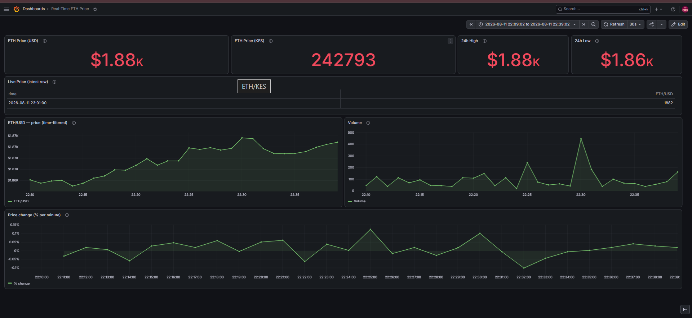

Team project · Night of Code
Real-Time Ethereum Tracker
1-minlive candles
- Problem
- A live price dashboard needs every candle delivered once, in order, and never lost.
- My part
- The Python producer and consumer, plus the Aiven Kafka and PostgreSQL setup. The producer polls Binance for closed 1-minute candles and publishes each one once. The consumer upserts into PostgreSQL and commits to the database before the Kafka offset, so a crash can only cause a harmless re-insert.
- Result
- A streaming feed behind the team's Grafana dashboard, with ETH priced in USD and Kenyan shillings.
PythonKafkaPostgreSQLAivenGrafana
Code on GitHub →